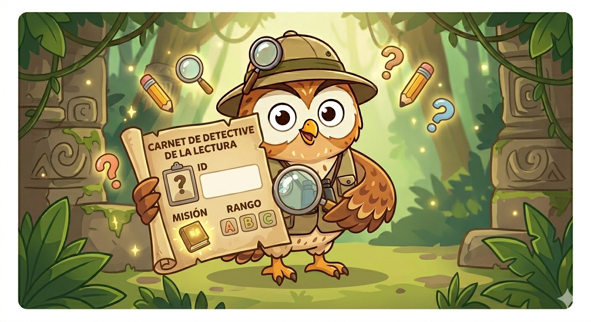

🕵️ ¡Bienvenido al Cuartel General, Explorador!

Antes de lanzarnos a buscar el tesoro en la selva de los textos, debemos saber qué tipo de herramientas llevas en tu mochila. Cada lector tiene un superpoder especial: algunos son rápidos encontrando pistas ocultas, otros tienen una memoria de acero y otros analizan cada paso que dan.
Actividad
📜 Instructivo: El Espejo del Detective
🧭 ¿Qué debes hacer?
Identifícate: Escribe tu nombre, colegio y grado en los primeros espacios del pergamino digital que aparece abajo.
Sinceridad Total: Lee cada pregunta con calma. No hay respuestas "buenas" o "malas", solo respuestas que nos dirán qué tipo de detective eres hoy.
Elige tu camino: Selecciona la opción (A, B o C) que más se parezca a lo que tú piensas o haces cuando lees.
Descubre tu perfil: Al terminar y dar clic en "Enviar", el sistema te mostrará tus resultados, dar clic en ver respuesta.
¡Suma tus letras y descubre si eres un Lector Literal, Inferencial o Crítico!
Al Finalizar, sigue a la Fase # 2 !!!